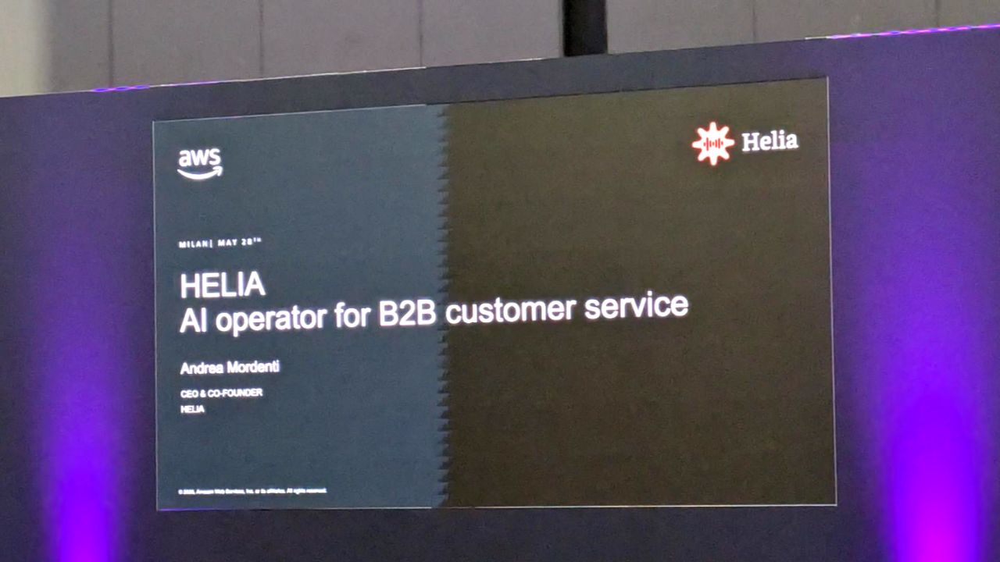
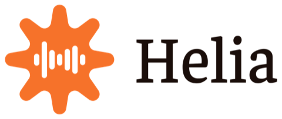

Software, dati e AI.
Per tutti.
Costruiamo software su misura per rendere le aziende più efficienti, con soluzioni robuste, integrate e davvero utili.
Sviluppo software su misura.
Il software si adatta al lavoro.
Progettiamo e sviluppiamo applicazioni web e strumenti gestionali intorno ai processi della tua azienda. Partiamo dalle attività di chi li userà e trasformiamo esigenze concrete in interfacce semplici.
Quando serve.
Quando fogli di calcolo, email e strumenti separati rendono difficile coordinare persone, attività e informazioni.
Cosa costruiamo.
Portali operativi, gestionali personalizzati, workflow e applicazioni integrate con i sistemi esistenti.
Consulenza AI e intelligenza artificiale per le aziende.
Dalle informazioni alle possibilità.
Portiamo l’AI nei processi dove può essere utile: ricerca nelle conoscenze aziendali, gestione documentale, previsioni e supporto alle decisioni. Il punto di partenza resta un obiettivo verificabile.
Quando serve.
Quando leggere, classificare o trovare informazioni assorbe tempo, oppure vuoi esplorare i segnali presenti nei tuoi dati.
Come la rendiamo utile.
Verifichiamo dati e fattibilità, costruiamo un prototipo e valutiamo qualità delle risposte, limiti e supervisione umana.

Dati e integrazione dei sistemi.
Tutte le parti si parlano.
Colleghiamo applicazioni, archivi e fonti dati per dare continuità ai processi. Organizziamo le informazioni perché possano essere consultate, analizzate e usate da persone e software.
Quando serve.
Quando gli stessi dati vengono inseriti più volte, i sistemi non comunicano o i report raccontano versioni diverse della stessa attività.
Cosa mettiamo in connessione.
API, gestionali, CRM e database. Progettiamo flussi di dati, controlli di qualità e dashboard con definizioni condivise.
Cloud e infrastrutture applicative.
Una base per crescere.
Progettiamo l’ambiente in cui il software vive: distribuzione, accessi, monitoraggio e continuità operativa. Le scelte tecniche seguono i requisiti e l’evoluzione del progetto.
Quando serve.
Quando devi portare un’applicazione online, rinnovare un sistema esistente o rendere più gestibili rilasci e manutenzione.
Come lavoriamo.
Valutiamo architettura, dipendenze e costi; prepariamo ambienti e procedure di rilascio, monitoraggio e recupero coerenti con il progetto.

Gli strumenti contano.
Le scelte, di più.
Dal frontend ai dati, uno stack aperto e adatto al progetto. Scegliamo in funzione delle integrazioni, della manutenzione e delle persone che lo useranno.
- PythonBackend & AI
- TypeScriptApplicazioni web
- ReactInterfacce
- FastAPIAPI & servizi
- PostgreSQLDatabase
- DockerAmbienti & rilasci
Da qui partiamo.
LAIF è una software house a Bologna? Lavorate anche in altre città?
Sì, LAIF ha sede a Bologna, in Via Galliera 32. Affianchiamo le aziende in Italia su sviluppo software, dati e intelligenza artificiale, organizzando insieme attività da remoto e momenti di confronto.
Che cosa comprende una consulenza AI per aziende?
Partiamo da un processo e dai dati disponibili. Valutiamo fattibilità e casi d’uso, costruiamo un prototipo e definiamo come verificare qualità, limiti e necessità di supervisione prima dell’integrazione.
Serve avere già un progetto definito?
No. Possiamo partire da un problema operativo e chiarire insieme priorità, utenti e vincoli prima di scegliere la soluzione.
Potete lavorare con i software che usiamo già?
Valutiamo API, dati e possibilità di integrazione dei sistemi esistenti, per capire cosa mantenere e cosa collegare.
Cosa succede dopo il rilascio?
Il percorso comprende l’adozione: formazione e affiancamento sono parte del lavoro. Modalità di assistenza ed evoluzione si definiscono nel progetto.
LAIF è anche
un ecosistema.
Incubiamo idee. Mettiamo competenze nei progetti pro bono. Costruiamo partnership.
Oltre al lavoro con le aziende, accompagniamo prodotti e iniziative che possono portare valore alle persone e al territorio. Un intreccio di esperienze che alimenta anche ciò che costruiamo per i clienti.
Scopri prodotti e iniziative

Hai un processo che merita di funzionare meglio.
Raccontaci quale attività vuoi migliorare, chi è coinvolto e quali strumenti usate. Da qui definiamo il primo passo.
Parliamoci